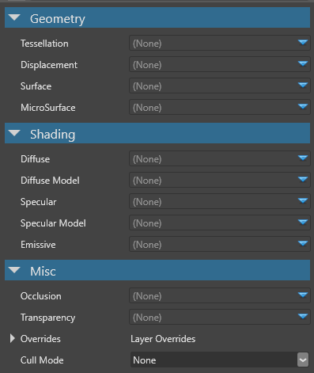

Material attributes
Warning
Приносим свои извинения за неудобства. Для этой страницы нет перевода на русский язык. Она будет отображаться на английском языке.
Intermediate Artist Programmer
Material attributes define the core characteristics of a material, such as its diffuse color, diffuse shading model, and so on. Attributes are organized into geometry, shading, and misc.

There are two types of attribute:
- attributes used as input values for a shading model (for example, the Diffuse attribute provides only color used by the diffuse shading model)
- attributes that can change the shading model (for example, diffuse shading models, such as the lambert model, interprets the diffuse attribute color)
Attributes contribute to a layer of a material. If a material is directly used as a model material, all its root attributes are considered part of the first layer.
You can also write custom shaders to use in material attributes.